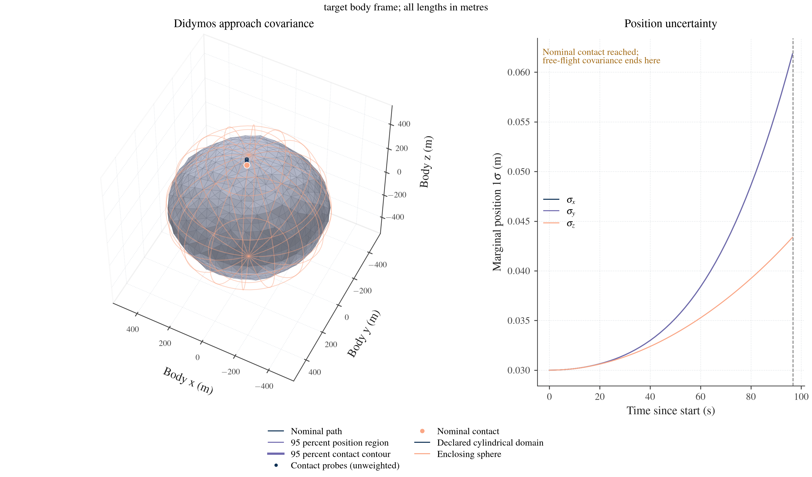
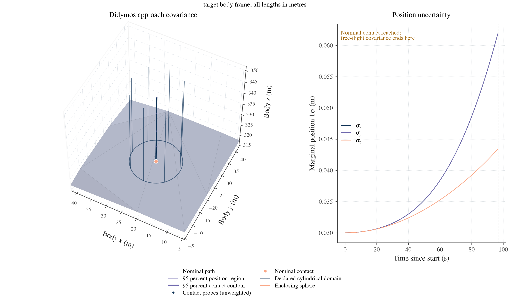
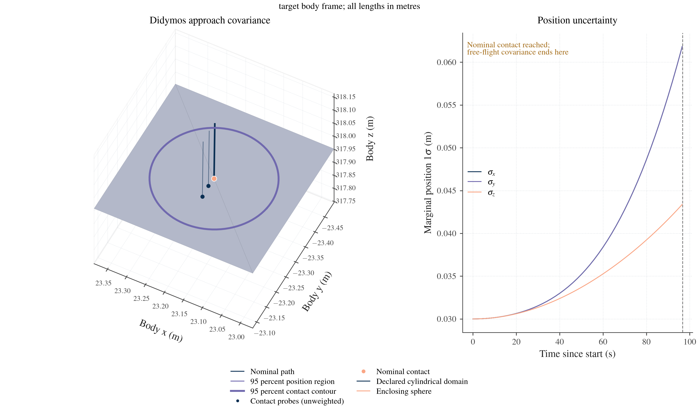
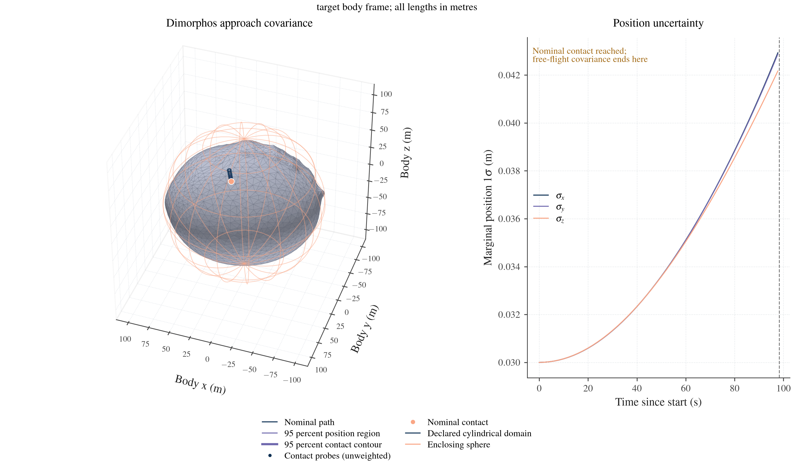
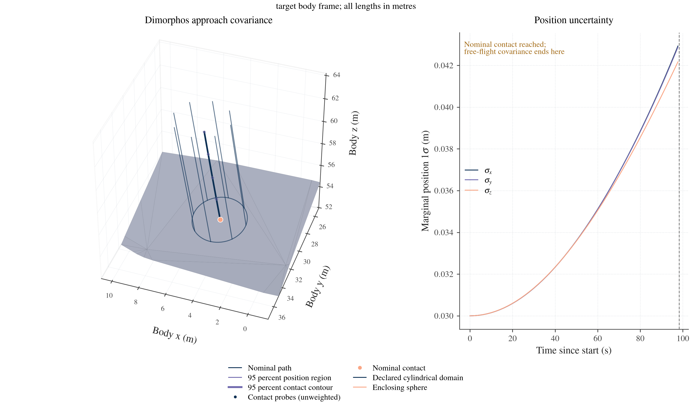
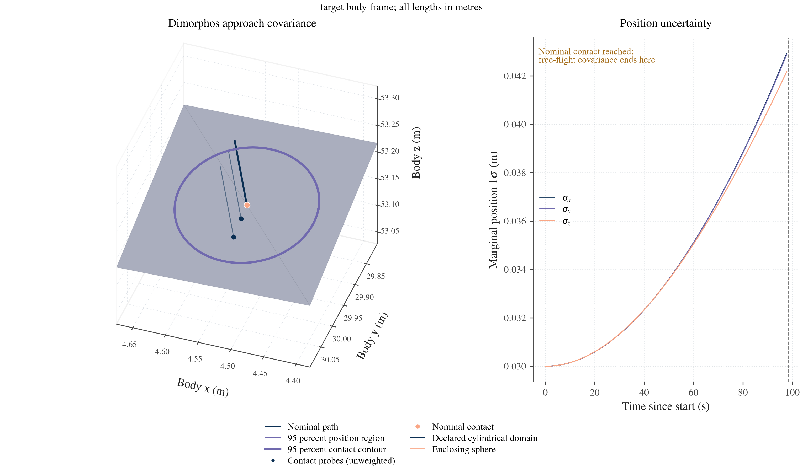
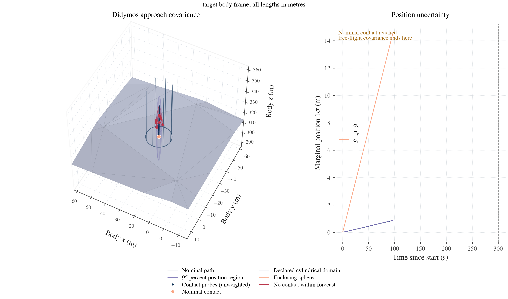
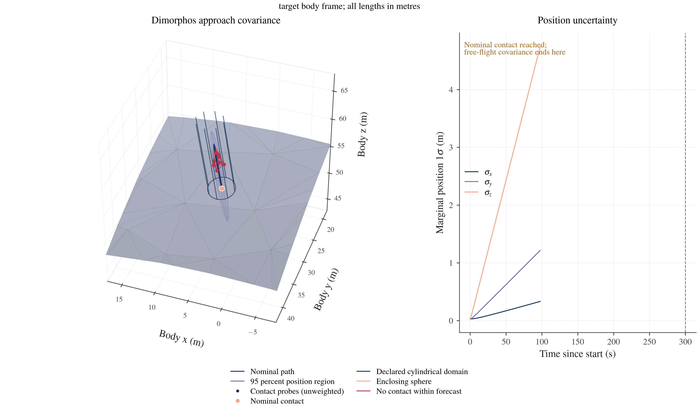

3D approach and landing covariance
This workflow follows a massless spacecraft toward a selected member of a rotating binary. It displays the target shape, the local gravity domain, the enclosing sphere, the evolving position covariance and the uncertainty at first contact. Separate nonlinear source perturbations show which displayed trajectories contact the surface, remain in flight through the forecast horizon or leave the supported field domain.
The Didymos and Dimorphos runner uses the same components for either target. The binary retains Hou translation and rotation; a selected local cylindrical field supplies the target-to-spacecraft force, and the companion retains its exterior field. Source covariance is transported directly. No observation values, estimator or filter are constructed.
Interactive views: Didymos · Dimorphos · Wide Didymos · Wide Dimorphos. Red indicates no contact during the recorded 300 s forecast; it is not an escape probability.
Run the complete case from a BASCO checkout using a new output directory:
python3 -B tools/dev.py run --plot examples/landing_covariance.py --target didymos --probes 4 --output "$PWD/results/landing-didymos" --figures "$PWD/results/landing-didymos-figures" --animation
python3 -B tools/dev.py run --plot examples/landing_covariance.py --target dimorphos --wide --probes 12 --output "$PWD/results/landing-dimorphos-wide" --figures "$PWD/results/landing-dimorphos-wide-figures" --animation
Choose --backend native for hand-derived field/binary partials; AD remains the default. Numeric output and rendering have separate functions, so compatible saved transports/scenes can be reused. Use a fresh output path instead of overwriting a completed artifact.
The examples use declared uncertainty assumptions and calibrated local nominal fields. They are not landing results inferred from the Hera paper's covariance. Scientific acceptance records the executed inputs, domain and field checks, derivative tests, integration refinement and limits.
Declared example and numerical results
The short-arc binary starts from a declared 1,200 m separation and supplied spins. It uses the two aligned shapes' degree-6 nominal moments. This is a demonstration initial state, not a mission-design solution. The spacecraft releases along the selected face normal from 30 m at 0.3 m/s for Didymos and from 10 m at 0.1 m/s for Dimorphos.
The small scenario declares 0.03 m component release-position sigmas and 0.0003 m/s component release-velocity sigmas. Both mass sigmas are 0.1%. Free local coefficients add a declared acceleration RMS equal to 5% of nominal acceleration at release, in addition to shared mass and release/coefficient pathways. This percentage is not a uniform fractional error at every field point. The complete factor and remaining binary-state/moment assumptions are recorded in the numeric export.
The saved AD runs with a 1 s maximum RK4 step give:
| Quantity | Didymos | Dimorphos |
|---|---|---|
| Shape enclosing radius (m) | 439.358 | 91.831 |
| Local cylinder radius / height (m) | 8 / 50 | 2 / 20 |
| Nominal first contact after release (s) | 96.51001669 | 97.69847849 |
| Contact-time standard deviation (s) | 0.134603 | 0.401684 |
| 95% tangent semimajor axis (m) | 0.151351 | 0.105081 |
| 95% tangent semiminor axis (m) | 0.151329 | 0.105050 |
| Local 95% tangent-plane area (m²) | 0.071954 | 0.034679 |
| Selected wide probes with no contact by 300 s | 9 of 12 | 9 of 12 |
| Selected wide probes with contact | 3 of 12 | 3 of 12 |
The last two rows are counts of selected unweighted source directions, not measured or estimated probabilities. The narrow tangent contours remain on a resolved smooth mesh face. The wide display omits that Gaussian contact contour and shows the separate geometric outcomes. The acceptance record owns exact source factors, event residuals, derivative agreement, backend comparison and step-refinement limits.
The nominal local calibration uses 54 coefficients, 672 deterministic fitting points and 48 independent volume holdout points for each target. Maximum relative held-out acceleration errors are 0.00162% for Didymos and 0.00507% for Dimorphos. A separate 10-point actual surface-boundary acceleration audit gives maximum errors of 0.00163% and 0.00512%. Independent polyhedral spatial-gradient comparisons at strictly exterior points give 0.2365% and 0.1923%, with stable reference finite differences. These numerical approximation checks are separate from the declared uncertain-gravity scenario and from unknown physical density structure.
What each view means
| Display | Meaning |
|---|---|
| Asteroid mesh | The supplied, aligned target surface, in body-frame metres |
| Enclosing sphere | The sphere outside which the exterior expansion has its general convergence guarantee; finite values inside it do not establish accuracy |
| Cylinder | The declared local field domain, with a geometric vacuum check and separate field-approximation checks |
| Nominal path | The coupled binary/spacecraft solution in target-body coordinates |
| Position ellipsoid | A fixed-time marginal position region from the propagated joint covariance |
| Surface contour | A local first-contact region corrected for uncertain event time and checked against the selected surface chart |
| Blue probe endpoints | Geometric contacts found by independently propagating selected source perturbations to their own events |
| Red paths or off-surface mesh | Probes with no detected contact during the declared forecast horizon; the red mesh is their geometric endpoint envelope |
| Amber paths | Probes whose field domain ends before contact or the requested horizon; their later outcome is unavailable |
Domain checks apply to the nominal trajectory and each independently propagated probe. A plotted ellipsoid is linearized output geometry; its vertices are not extra force evaluations or a complete nonlinear domain-validity certificate. Overlap with the surface or domain boundary highlights the need for event/outcome treatment, rather than permission to extend the force model.
A red branch is not an escape certificate. The unweighted probes do not estimate an impact probability, a miss probability or the probability content of the red mesh. The stored result distinguishes contact, no_contact, domain_exit, edge, grazing and numerical or initial-state failures. The renderer consumes those outcomes; it does not classify them from a picture.
Didymos
The primary example uses the archived Didymos radar-derived mesh, whose file header records a 761 m equivalent diameter, aligned to its centre of mass and principal axes. The local cylinder starts at a verified supporting face: every mesh vertex lies behind that face's plane. This establishes a mass-free cylinder above the plane. The face, orientation and interior clearance are selected from geometry, without a body-specific face index.



Open the interactive Didymos view · Download animation
Dimorphos
The secondary case uses the archived PDS SBN v004 Dimorphos mesh, decimated to approximately 6,000 faces. It changes the target, shape, field calibration, release and uncertainty assumptions. The plotting code and contact/statistical interfaces stay the same. Both asteroid poses and the spacecraft evolve in the coupled equations, with the two masses retained as uncertain fixed parameters.



Open the interactive Dimorphos view · Download animation
Wide uncertainty and no-contact probes
The wide cases increase a declared source uncertainty while keeping the nominal model fixed. Selected source-factor perturbations are propagated independently through the same binary and local field. They retain their own contact times and field-domain outcomes. The maximum requested forecast is 300 seconds.

Explore the wide Didymos case · Download wide-case animation

Explore the wide Dimorphos case · Download wide-case animation
Red paths have no detected contact during their stated horizon. A red off-surface mesh is drawn only when their final endpoints support a nondegenerate three-dimensional hull; otherwise the available points and paths remain visible. That hull is a geometric envelope of displayed probes, with no probability weight or coverage claim. Amber paths stopped at the model domain, so their eventual surface outcome is unknown.
The selected perturbations are unweighted two-unit directions in a declared latent source subspace. They do not cover the full Gaussian source distribution. Wide source errors can leave the regime of accurate first-order event covariance or a single-face chart. The wide cases therefore separate the propagated fixed-time position marginal from independently traced contacts and do not promote the small-error tangent ellipse to a universal landing footprint.
Interactive controls and animation
The standalone viewers work offline and have no external JavaScript dependency. Drag to rotate, right-drag to pan and use the wheel to zoom. Choose overview, approach or surface framing; the local views crop displayed geometry to a declared view box without changing the shape, contact point or physics. Toggle the mesh, sphere, cylinder, covariance, probes and contact region separately. The time slider and playback controls use physical elapsed time. The status panel shows the displayed epoch and available uncertainty/outcomes.
After nominal contact the viewer can retain the contact point as a static reference while later probes continue on their own clocks. Its contact-ended status removes the nominal free-flight ellipsoid and component sigmas; no post-contact covariance is propagated. The red endpoint envelope is shown at its declared final forecast time.
The Back button returns to the calling page when browser history is available. Browser back/forward also preserves the manual's saved reading position. The MP4 is a presentation of the same numerical scene; a camera animation does not rerun dynamics or covariance. The handbook uses the static figures above, with links to the interactive and video versions.
Position probability regions
The displayed ellipsoids describe three-dimensional position, rather than a six-dimensional position/velocity ellipsoid drawn in physical space. At fixed time, let P_r be the target-body position covariance. For a full-rank Gaussian marginal, the probability region at level p is
(r-\bar r)^T P_r^{-1}(r-\bar r)\leq\chi^2_{3}(p).
The principal semiaxes are sqrt(chi2.ppf(p, 3) * eigenvalue(P_r)). The plots use an explicitly stored probability, normally 0.95. This differs from plotting each axis at one standard deviation. The SciPy chi-square reference describes the percentile function used by the implementation.
A declared finite singular distribution can have a lower-dimensional supported region. Its rank is recorded and the probability scaling uses that finite rank. An unobservable or unresolved output is a different case: its nominal path can be shown, but the renderer omits the unavailable ellipsoid. Missing information is not replaced by a small or zero uncertainty.
Body-frame uncertainty must include the body's own uncertain position and attitude. Rotating an inertial spacecraft covariance alone would omit those pathways and their cross-correlations. The approach adapter forms the complete body-frame output Jacobian and transports its original latent factor before squaring.
These are free-flight, fixed-time linearized regions up to the nominal event. Realizations that touch earlier do not continue as a modeled landed or rebounding spacecraft. The separate first-contact result handles uncertain event time; the selected nonlinear probes test their own trajectories and event outcomes. Wide uncertainties, face changes and misses require that distinction.
Contact time and surface uncertainty
Let J_r map the original source errors into the target-body position at the nominal event time, v_r be its body-relative velocity and n the outward unit surface normal. For a smooth inward crossing,
J_t=-\frac{n^T J_r}{n^T v_r},\qquad
J_{\mathrm{contact}}=J_r+v_rJ_t.
The same operations act on the transported source factor. This preserves initial-state, mass, gravity, release and consider correlations without reconstructing a dense source covariance. Normal speed near zero makes the event derivative ill-conditioned; grazing results remain explicit rather than receiving a clipped denominator.
The contact covariance is projected onto a fixed nominal two-axis tangent chart. A two-dimensional probability contour uses chi2.ppf(p, 2), not the three-dimensional position scaling. With tangent covariance P_T, its planar area is
A_p=\pi\chi^2_2(p)\sqrt{\det P_T}.
That area is a local first-order tangent-plane quantity. It is not automatically a geodesic area or a contour crossing arbitrary mesh faces. The surface view distinguishes an accepted surface contour from an unprojected tangent contour. A contour leaving the accepted face, a mesh edge or vertex, grazing, unavailable source support or a field-domain exit requires an explicit unavailable/limited result. Discrete hit points can still be displayed without promoting them to a smooth Gaussian footprint.
The contact driver uses the shared augmented RK4 step for state, STM and force-parameter sensitivities. It advances inward with a gap/rate limiter and resolves the boundary from the valid side using declared distance and estimated-time tolerances. Field-domain checks remain active. It does not silently continue the force into material to create a root. Its chronological, step-resolved event policy is recorded; step refinement is required and an arbitrary unsampled oscillatory path is not certified to have no earlier root.
Nominal field, uncertain gravity and geometry
The two example mean fields are calibrated to a BASCO-owned polyhedral reference in a selected local domain. The uniform density of that nominal calibration reference does not constrain the uncertain local coefficients to a uniform-density family. Free coefficient errors and their declared correlations with masses and release errors remain in the joint input factor.
Shape geometry, its nominal COM/principal-axis alignment and the patch pose are fixed input geometry in these examples. Uncertain shape, COM-to-shape offsets or patch alignment require additional explicit source mappings; body motion and its pose uncertainty are already included in the approach map.
A supporting face certifies geometry, not field accuracy. The example checks the local field against held-out reference values across the cylinder, including points close to its lower boundary, plus a separate acceleration check on the actual surface boundary. The spatial-gradient finite differences remain strictly in vacuum; they do not differentiate across material. Finite fitting/holdout grids do not certify the approximation at every unsampled point. Derivative and native/AD tests are separate checks. Those comparisons validate the stated nominal approximation and represented uncertainty pathways. They do not reconstruct missing interior structure or prove that the reference density is the real asteroid density.
The demonstrated source explicitly shares mass response with the local field and adds free local particle-field modes. It does not infer one unique common interior from independently selected binary moments and local coefficients. A physically shared interior parameterization requires its own Jacobians into both sets of force coordinates; a completed common-source representation map can provide such a declared relationship instead of independent uncertainty budgets.
The source factor represents a declared analysis scenario. An actual Hera covariance can feed the existing representation mapper when its completion and extra-mode assumptions are supplied. An exterior-to-local map does not uniquely determine arbitrary surface heterogeneity. The present landing examples use the direct local route and do not include an automatic sphere-boundary model switch.
Reuse the components
The application script separates model/shape and source setup from propagation, numeric export and rendering. It exposes the target as a study choice. To create a new case, supply your own aligned mesh, physical binary model, local field, complete source distribution and initial/release conditions; keep the same approach and scene components.
The following is a composition fragment. model, parameters, field, source, coefficient_uncertainty, initial and mesh have already been constructed with compatible units, frames and source identities:
from basco import RK4
from basco.spacecraft import RestrictedDynamics, TriangleSurface, propagate_approach
from basco.flight_plotting import FlightScene, flight_figure, write_flight_html
surface = TriangleSurface(mesh)
dynamics = RestrictedDynamics(model, parameters, local_fields={"A": field})
trajectory = propagate_approach(
dynamics, initial, source,
local_uncertainties={"A": coefficient_uncertainty},
target="A", surface=surface, duration=300, cadence=1,
integrator=RK4(1),
)
scene = FlightScene(
mesh, trajectory.epochs, trajectory.positions_m, trajectory.covariance_m2,
patch=field.basis.patch,
enclosing_radius_m=model.system.primary.distribution.bounding_radius,
statuses=trajectory.position_history.status,
title="My target approach",
)
figure = flight_figure(scene, view="landing")
write_flight_html(scene, "interactive.html")
The complete runner also attaches event-corrected contact geometry and source probes to the scene. FlightScene contains numerical visualization data, not a dynamics evaluator or original covariance factor. export_flight_scene and read_flight_scene preserve that scene for redrawing. animate_flight writes MP4 or GIF; MP4 uses the explicitly available FFmpeg encoder. Plot generation is optional and does not repeat propagation.
| Component | Responsibility |
|---|---|
| RestrictedDynamics | Coupled binary and massless spacecraft force/derivative evaluation, with explicitly selected per-body local fields |
| propagate_approach | Original-source variational transport, body-frame history and first-contact output |
| probe_approach | A selected source perturbation with its own value-only trajectory and event |
| PlaneSurface, SphereSurface, TriangleSurface | Fixed geometry, distance/normal, first intersection and differentiability policy |
| contact_covariance | Event-time correction, original-factor covariance and tangent report |
| FlightScene | Renderer-independent mesh, path, covariance, domains, contacts and explicit probe outcomes |
| flight_figure | Static overview, approach or surface view through the shared scientific theme |
| animate_flight | Time-dependent MP4/GIF presentation of one saved scene |
| write_flight_html | Self-contained interactive browser view |
The acceptance record owns the quantitative results and tested limits. Return to spacecraft covariance, near-field source mapping or example scripts.